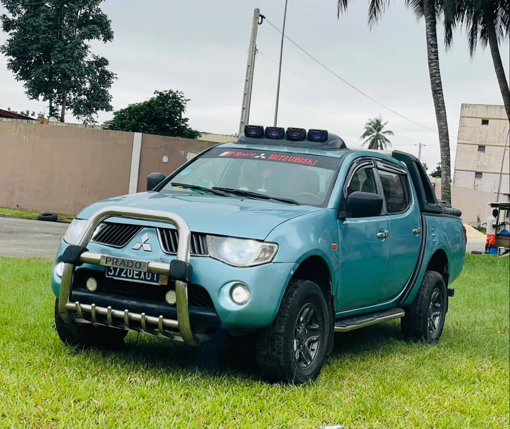

À vendre
Mitsubishi L200 2009
2009 · Diesel · 4 cylindres · 5 places
4 800 000 FCFA
Année2009
CarburantDiesel / gasoil
Cylindres4
MoteurOrdinaire
Puissance fiscale8 CV
Places assises5
ClimatisationD’origine
DocumentsÀ jour
Pick-up Mitsubishi L200, moteur ordinaire, diesel 4 cylindres, puissance fiscale de 8 CV et 5 places assises. Climatisation d’origine et documents à jour.
Contactez TVB CI AUTO pour connaître la position du véhicule et organiser une visite.